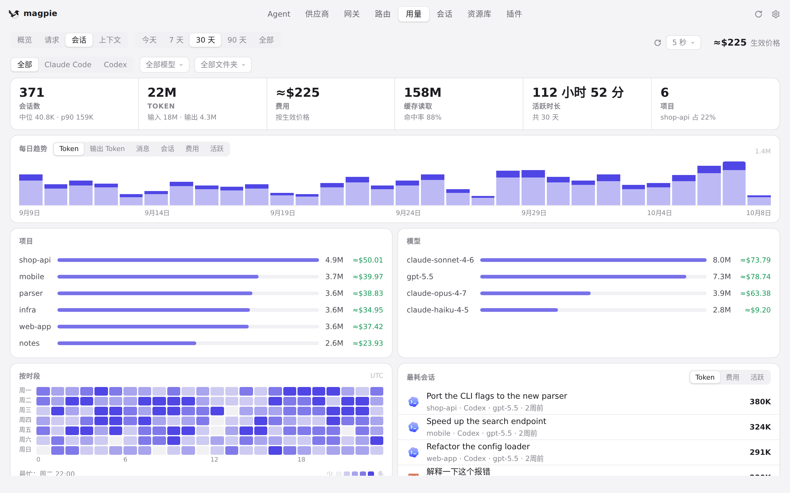
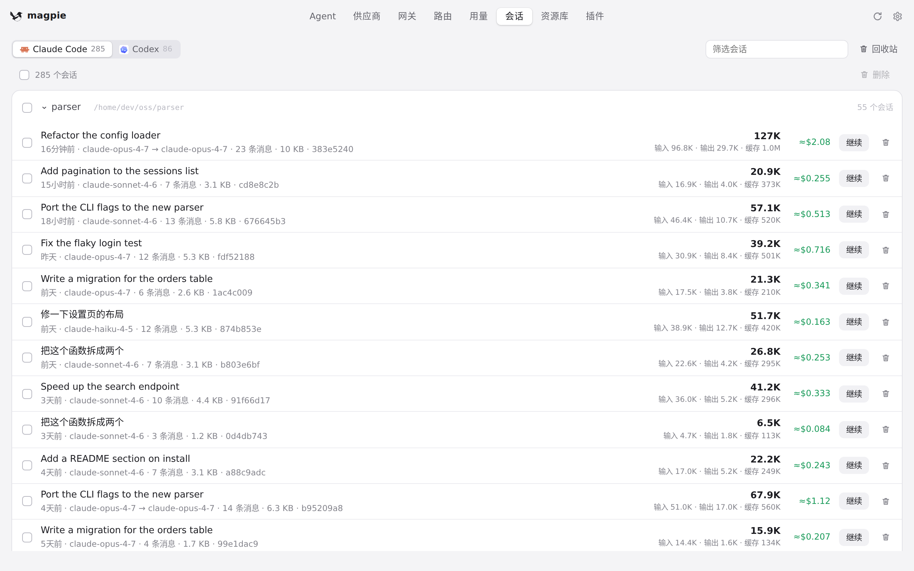
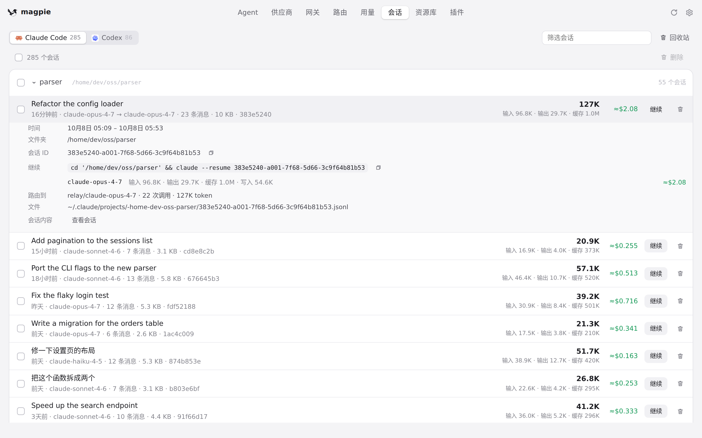
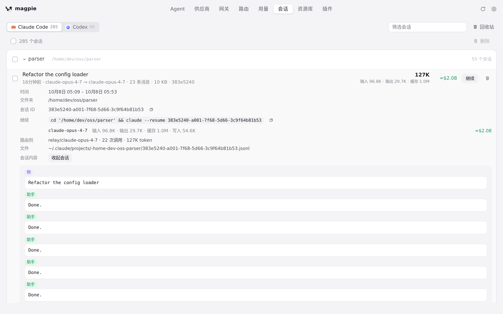

#1033 界面预览
commit af5be43 · 回到 PR · PR 让会话子系统把本机的 Reasonix 会话读进列表：会话列表/统计里会多出 Reasonix 的会话与模型，会话行在只有部分本地用量时显示「用量历史不完整」，会话详情顶部多一行说明；当存在读不了的 Reasonix 存储时，列表的统计行与底部说明改为显示兼容性提示。
红线是鼠标走过的轨迹，红色圆环是一次点击；底部文字是这一步在做什么。空格暂停，← → 逐段查看。
 用量 › 会话列表 · 用量 › 会话：会话列表与上方的 Agent 筛选条
用量 › 会话列表 · 用量 › 会话：会话列表与上方的 Agent 筛选条

用量 › 会话列表 · 筛「全部」后的会话列表与统计行

会话详情与对话 · 会话：本机找到的会话列表

会话详情与对话 · 会话详情面板

会话详情与对话 · 会话内容面板